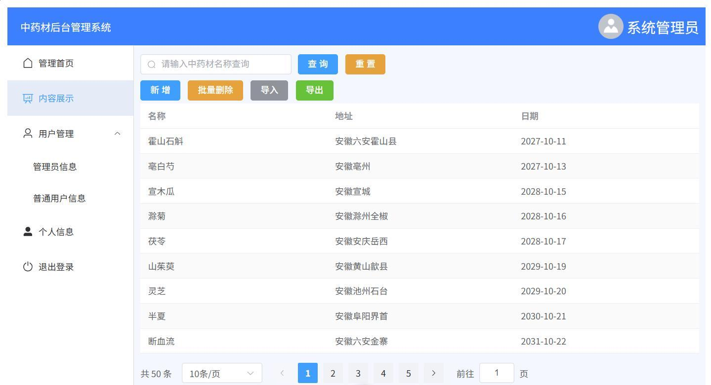
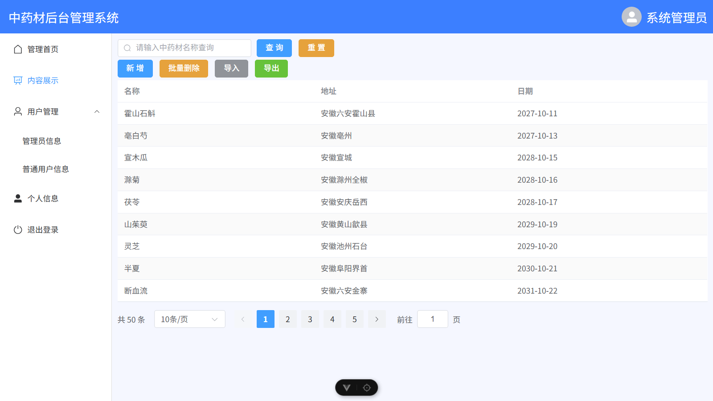
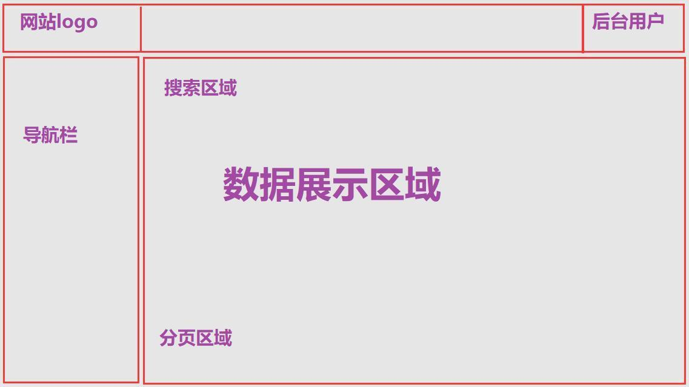
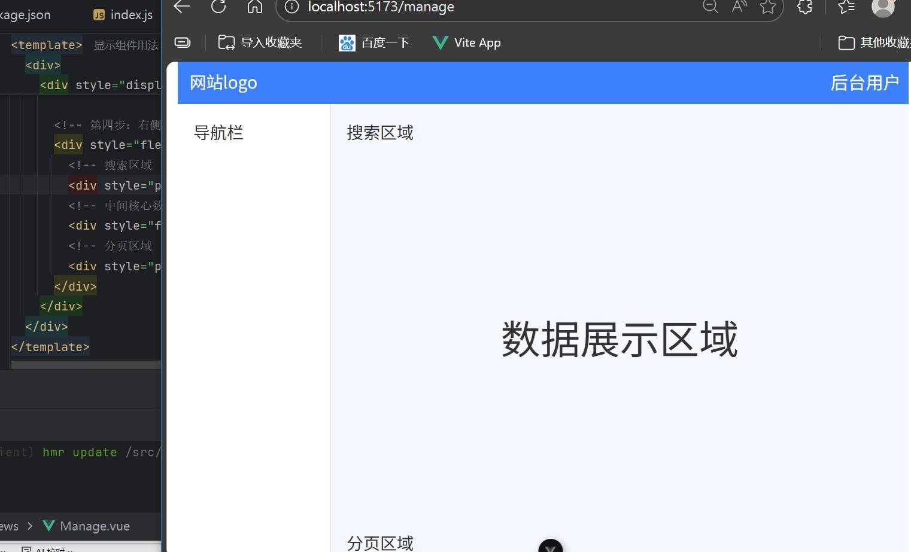
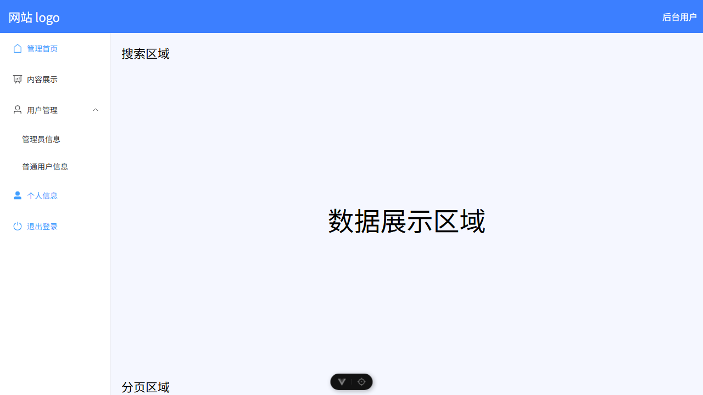
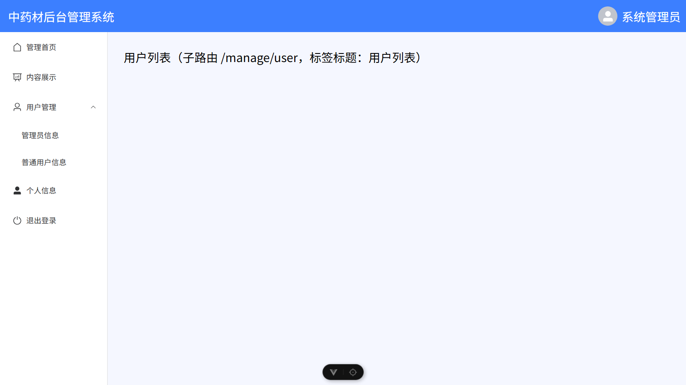
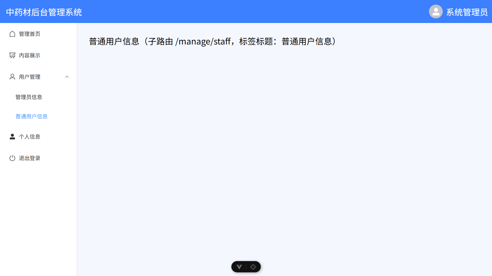
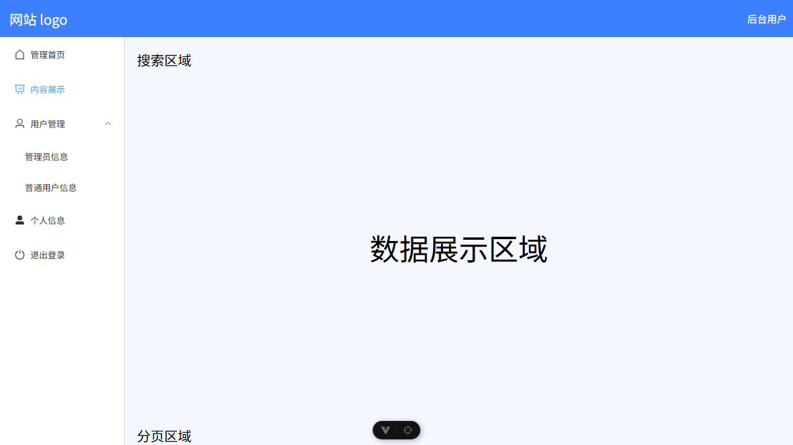
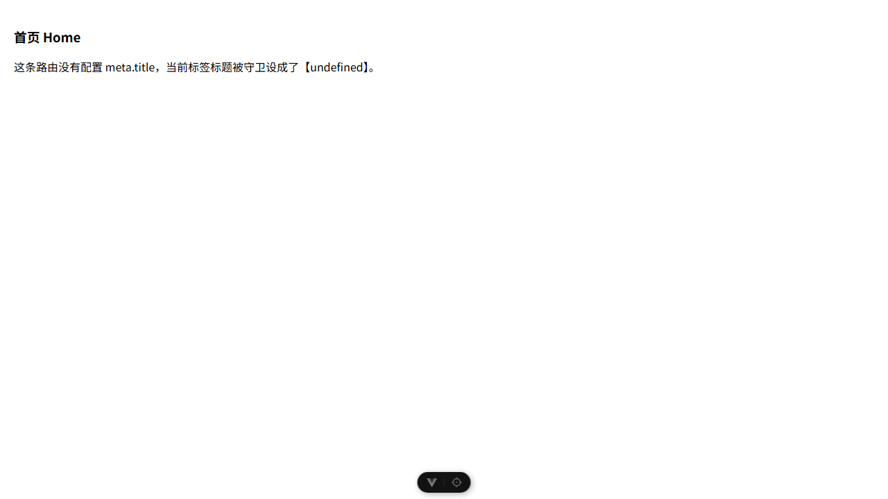
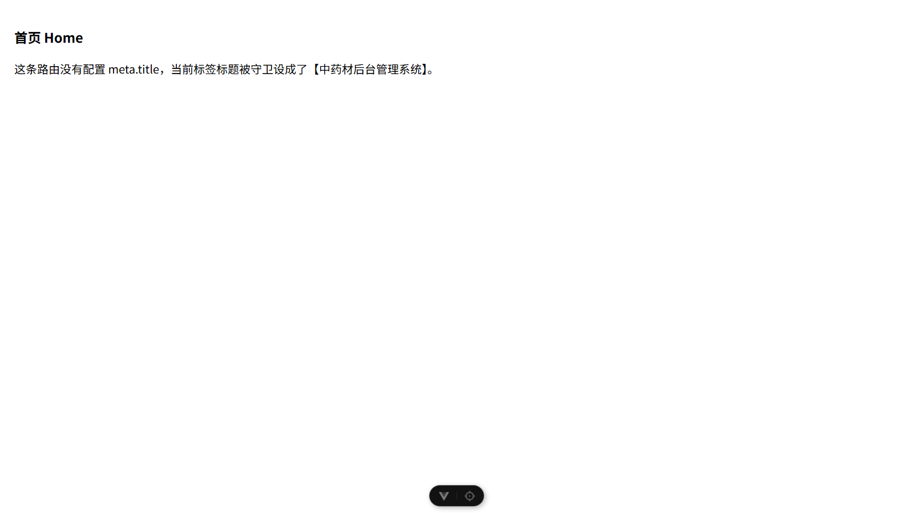

这讲要做什么，最后做成了什么样
实训 6 是前面五讲的合流：实训 1 建工程、实训 2 学语法、实训 3 装 Element-Plus、实训 4 用组件、实训 5 配路由，这一讲把它们拼成一个能跑的后台页面。三件事：
- Manage.vue：父页面，负责“壳”。顶部头部、左侧
el-menu导航、右侧内容区三块。 - Detail.vue：子页面，负责“肉”。搜索框、功能按钮、
el-table数据表、el-pagination分页。 - router/index.js：把 Detail 挂成 Manage 的 children，点左侧菜单时只有右侧换，头部和导航不动。
讲义目标界面 与 我的实现，并排看


/manage/detail，1280×720、1.25 缩放截图，与讲义图同一口径。头部、导航、搜索、按钮组、斑马纹表格、分页条逐项对上。布局骨架：两个 flex 就把页面切完
整个后台不需要任何布局框架，两层 flex 就够。外层是“上下”，内层是“左右”，右侧内部再来一层“上下”。讲义把它拆成 6 步开发思路，本质就是这 4 个矩形：
四块区域的 CSS 依据
| 区域 | 关键样式 | 作用 |
|---|---|---|
| 顶部头部 | height:60px; display:flex; align-items:center | 整行蓝底，垂直居中放 logo 与用户 |
| 左侧导航 | width:200px; border-right:1px solid #ddd | 固定宽，右边一条分隔线 |
| 右侧内容 | flex:1; width:0; flex-direction:column | 吃掉剩余宽度，内部再纵向排 |
| 高度自适应 | min-height:calc(100vh - 60px) | 视口高减去头部高，导航和内容同高 |
<div style="flex:1"></div>，它没有内容，专门用来把“系统管理员”顶到最右边；二是右侧内容区的 width:0，配合 flex:1 才能防止表格里长文本把这列撑爆。
讲义的布局框线图

骨架阶段先跑通，再填内容
讲义第 4 步要求在 Manage.vue 里先把“搜索区域 / 数据展示区域 / 分页区域”三块空位划出来。我照做并截图，这一步的产物和讲义第 9 页的运行图完全一致：

localhost:5173/manage 的运行图。
/manage）。三块占位、导航栏、头部全部对上。el-menu 项默认高 56 像素，71÷56 约等于 1.25，说明那张图是 1.25 缩放下截的。换算回 CSS 像素：头部 60、导航 200 至 216，与讲义代码里的 60px 和 200px 吻合。
六个知识点，逐个讲透
知识点 1flex
三段式头部：左中右怎么排
头部只有三块：logo 靠左、用户靠右、中间留白。用 flex:1 的空白 div 当“弹簧”，比 justify-content:space-between 更好扩展（以后中间要塞面包屑就直接替换那个 div）。
<!-- 顶部头部整行容器 -->
<div style="height: 60px; background-color: #3c7fff; display: flex; align-items: center">
<div style="width: 200px; display: flex; align-items: center; padding-left: 15px">
<span style="font-size: 22px; color: white">中药材后台管理系统</span>
</div>
<div style="flex: 1"></div> <!-- 弹簧：把右侧顶到最右 -->
<div style="width: fit-content; display: flex; align-items: center; padding-right: 10px">
<el-avatar :size="36"><el-icon><UserFilled /></el-icon></el-avatar>
<span style="font-size: 22px; color: white">系统管理员</span>
</div>
</div>width:200px 和左侧导航的 200px 对齐，logo 正好压在导航栏上方，这是后台界面“看起来整齐”的关键。
知识点 2el-menu
菜单开 router 属性，index 就是路径
el-menu 加上 router 之后，点菜单项等于 router.push(index)。所以 index 不再是“编号”，而是路由地址，它同时还是高亮判据。
<el-menu router
:default-active="router.currentRoute.value.path"
:default-openeds="['1']"
style="border: 0">
<el-menu-item index="/manage"><el-icon><House /></el-icon>管理首页</el-menu-item>
<el-menu-item index="/manage/detail"><el-icon><DataAnalysis /></el-icon>内容展示</el-menu-item>
<el-sub-menu index="1">
<template #title><el-icon><User /></el-icon><span>用户管理</span></template>
<el-menu-item index="/manage/admin">管理员信息</el-menu-item>
<el-menu-item index="/manage/staff">普通用户信息</el-menu-item>
</el-sub-menu>
</el-menu>| 属性 | 干什么 | 不写会怎样 |
|---|---|---|
router | 点击时按 index 跳转 | 点了只改高亮，地址栏不动 |
:default-active | 当前路径对应项高亮 | 刷新后菜单不知道自己在哪一页 |
:default-openeds | 默认展开哪些子菜单，值是 sub-menu 的 index 数组 | 子菜单收起，要点一下才开 |
style="border:0" | 去掉 el-menu 自带的右边框 | 和导航栏那条 border-right 叠成双线 |
讲义这里 :default-active 直接用了 router.currentRoute.value.path，这是“用 import 进来的 router 对象”的写法；等价的还有 useRoute().path。前者要在 script 里 import router from '@/router/index.js'，这就是 Manage.vue 那行看着没用的 import 的真正用途。
知识点 3本讲核心
嵌套路由：children 只配一半，另一半是 router-view
这是实训 6 最容易翻车的地方，也是讲义的一个实质性缺漏。嵌套路由要同时满足两件事，缺一不可：
- 路由表里把 Detail 写成 Manage 的 children；
- Manage.vue 里放一个
<router-view />，作为子页面的“插槽”。
{
path: '/manage', name: 'manage', meta: { title: '后台管理' },
component: () => import('../views/Manage.vue'),
children: [
{ path: '', name: 'manageHome', redirect: '/manage/detail' },
{ path: 'detail', name: 'detail', meta: { title: '内容展示' }, component: () => import('../views/Detail.vue') },
{ path: 'user', name: 'user', meta: { title: '用户列表' }, component: () => import('../views/User.vue') },
]
}子路由的 path 前面不写斜杠：detail 拼出来是 /manage/detail。写成 /detail 就变成顶级路径了。
router-view）跑了一遍，分别截了 /manage 和 /manage/detail 两张图，两张一模一样，右侧始终停在“数据展示区域”五个大字。Detail.vue 根本没被渲染。见第 4 节第 1 条。
补上 <router-view /> 之后，同一个位置就换成了 Detail 的表格；点 /manage/user 又换成用户列表，头部和导航全程不动。这才叫“嵌套”。

/manage/user：父页面壳不变，右侧内容区渲染子页面，标签标题被守卫改成“用户列表”。
/manage/staff，菜单高亮正确落在子项上。知识点 4meta + 守卫
标签页标题自动切换
meta 是给路由挂的自定义数据，全局前置守卫在每次跳转前读它，改浏览器标签标题。守卫三个参数：to 要去哪、from 从哪来、next() 放行。
router.beforeEach((to, from, next) => {
document.title = to.meta.title || '中药材后台管理系统'
next()
})那个 || '默认标题' 不是可有可无的。讲义原话是 document.title = to.meta.title，遇到没配 meta 的路由，to.meta.title 是 undefined，赋值给 document.title 会被转成字符串 "undefined"，标签页就明晃晃显示这个词。我实测抓到了，见第 4 节第 4 条。
detail 那条没写 meta，标签页会显示 undefined。实测结果是显示“后台管理”。原因是 vue-router 会把父级和子级的 meta 合并到 to.meta，子级没写就继承父级。所以“没配 meta”的真实后果是标题不区分页面，而不是 undefined。undefined 只发生在整条链上都没有 meta 的顶级路由（/home、/test）。
知识点 5reactive
模拟数据与表格、分页组件
表格吃的是一个数组，分页吃的是一堆数字，两者在讲义代码里没有连起来。先把组件属性认清：
<el-table :data="data.tableData" stripe>
<el-table-column label="名称" prop="name" />
<el-table-column label="地址" prop="address" />
<el-table-column label="日期" prop="date" />
</el-table>
<el-pagination
v-model:current-page="data.pageNum"
v-model:page-size="data.pageSize"
:page-sizes="[5, 10, 15, 20]"
background
layout="total, sizes, prev, pager, next, jumper"
:total="data.total" />| 写法 | 含义 |
|---|---|
:data / :total | 带冒号是绑定，把 JS 变量给组件；不带冒号是字面字符串 |
v-model:current-page | 具名 v-model，页码双向绑定，点页码会自动写回 data.pageNum |
stripe / background | 布尔属性，写了就是 true。这里 background 不带冒号是对的（实训 4 写成 :background 才出问题） |
layout | 分页条上有哪些块、什么顺序，逗号分隔 |
数据用 reactive 包一个对象，模板里直接 data.name、data.tableData 取。9 条中药材数据（霍山石斛、亳白芍、宣木瓜、滁菊、茯苓、山茱萸、灵芝、半夏、断血流）产地全是安徽，这是课程的专业背景，报告里点一句会加分。
total: 50 只是给分页组件算页数用的，tableData 只有 9 条，也没人按 pageNum 去切数组。这不算写错（讲义要求的就是“完成分页 UI 展示”），但必须知道边界在哪。
要让分页真的动起来，就差一个计算属性切片，后端真分页则要在页码变化时重新请求：
import { computed, watch } from 'vue'
const pagedData = computed(() => {
const start = (data.pageNum - 1) * data.pageSize
return data.tableData.slice(start, start + data.pageSize)
})
// 数据只有 9 条时，total 也该跟着真实数据走
watch(() => data.tableData.length, (n) => { data.total = n })知识点 6图标
prefix-icon=“Search” 为什么能生效
Detail.vue 里 prefix-icon="Search" 传的是一个字符串，不是组件。它能显示，靠的是实训 3 在 main.js 里做过一次全局注册：把所有图标遍历注册成全局组件，Element-Plus 内部再用 resolveComponent('Search') 按名字找。
import * as ElementPlusIconsVue from '@element-plus/icons-vue'
for (const [key, component] of Object.entries(ElementPlusIconsVue)) {
app.component(key, component)
}所以 Detail.vue 里那行 import { Search } from '@element-plus/icons-vue' 在当前写法下其实没被用到。两种正确搭配任选其一，别混：
- 全局注册 + 字符串：
prefix-icon="Search"（讲义走这条） - 局部 import + 绑定：
:prefix-icon="Search"（把 import 的东西传进去）
Manage.vue 里 <el-icon><House /></el-icon> 这种标签写法同理，也是靠全局注册才不用逐个 import。
讲义代码实测问题清单
下面 7 条全部是我把讲义代码原样跑起来之后量到的，不是读代码猜的。每条都写了怎么验的。严重度分三档：致命 页面出不来；要改 功能有缺陷；口径 不算错，但要知道。
| # | 位置 | 讲义写法 | 我实测到的现象 | 结论与改法 |
|---|---|---|---|---|
| 1 | Manage.vue | 整份 Manage.vue 代码里没有 <router-view />，右侧只有三块占位 div |
分别访问 /manage 与 /manage/detail，两张截图完全相同，右侧停在“数据展示区域”占位文字，Detail 从未渲染 |
致命 嵌套路由只配了一半。右侧内容区必须放 <router-view />；三块占位由 Detail 的三张卡片填，占位 div 删掉 |
| 2 | Manage.vue 子菜单 | <el-menu-item>管理员信息</el-menu-item>，两条子菜单项都没有 index |
点开子菜单再点“管理员信息”，地址栏仍是 /manage/detail，页面毫无反应；控制台两条 [Vue warn]: Missing required prop: "index" |
要改 index 是必填项，补 index="/manage/admin"、index="/manage/staff"，并在 children 里加这两条路由 |
| 3 | Manage.vue 菜单 | 管理首页、个人信息、退出登录三项的 index 都写成 /manage |
停在 /manage 时，.is-active 同时命中三项，截图上三条菜单一起变蓝 |
要改 一个 index 对应一个路径才会一个高亮。个人信息、退出登录应有各自路径（或改成按钮，不参与路由） |
| 4 | index.js 守卫 | document.title = to.meta.title |
访问 /home（没配 meta）时标签页显示 undefined，页面内打印 document.title 得到字符串 “undefined” |
要改 加兜底：to.meta.title || '默认标题'。这条实训 5 已出现过，本讲又照抄了一遍 |
| 5 | index.js 路由表 | detail 那条子路由是 children 里唯一没写 meta 的 |
访问 /manage/detail 标签页显示“后台管理”（父级的标题），不是 undefined |
要改 后果是子页面标题不分。补 meta:{title:'内容展示'}。顺带纠正一个常见臆断：父子 meta 会合并，子级没写就继承父级 |
| 6 | index.js 守卫 | 第三个参数 next() 的写法 |
每次导航控制台都有一条 [VUE_ROUTER_R0025] The `next()` callback in navigation guards is deprecated |
口径 讲义是按 vue-router 4 写的，本机装的是 5.3.1 已废弃 next。功能照常，新代码建议写 return。我保留 next() 以与报告一致 |
| 7 | Detail.vue | total: 50 但 tableData 只有 9 条，也没按页码切片；三个 class="card" 而 <style scoped> 是空的 |
点第 2 页，页码高亮变了，表格仍是同样 9 行；卡片没有底色和边框（样式表里根本没有 .card 规则） | 口径 讲义目标只是“分页 UI 展示”，不算错。class="card" 是实训 4 就留下的无效类名。想让分页真生效见知识点 5 的切片写法 |
两张关键对比图

/manage/detail，右侧仍是占位文字。和上一张 /manage 的截图逐像素相同。<router-view /> 之后。Detail 渲染进右侧内容区，与讲义目标界面一致。
/home，页面自己打印出标签标题是 undefined。
另外两条量出来的小差异
- 头部 logo 用讲义的
font-size:22px，9 个字占 198 像素，正好塞满width:200px的内容盒，但会略微越过左侧导航那条分隔线；讲义目标图里这段文字约 20 像素。要更贴图纸，把 logo 字号压到 20px。我保留了 22px，以代码为准。 - 讲义正文里“最后实现的界面”是 1.25 缩放下截的图（头部量得 75 像素，对应代码 60px），截图对比时要把缩放口径对齐，否则会误判“我的导航栏偏窄”。
报告“三、实验过程”这一栏怎么写
这次得分卡在 0 分，不是因为代码不会，而是因为“实验过程”那一栏是空的：题目要求记录操作步骤、关键命令、截图、遇到的问题及解决方法，而卷面上只把题目原文抄了一遍，最后一行“使用EI框架”。这一节按作业的 3 大项 12 小点，逐条给出“做了什么、代码在哪、截图是哪张、遇到什么问题”。
先备好的三条命令
npx --yes create-vue@latest admin-layout --force --router --bare # 建工程，只勾 Router
npm install # 装依赖
npm install element-plus @element-plus/icons-vue # 装 UI 框架与图标
npm run dev # 启动，默认 http://localhost:5173逐项对照
| 小点 | 要求 | 我做了什么（可直接改写进报告） | 配图 |
|---|---|---|---|
| 1-1 | 整体容器分四部分 | 在 Manage.vue 建最外层 div，内部依次是头部、左右分栏容器、右侧内容列，四块区域用注释标号 | 06_讲义字面版_manage |
| 1-2 | flex 实现头部 | 头部 height:60px; background:#3c7fff; display:flex; align-items:center，左 logo 宽 200px，中间空 div 用 flex:1 当弹簧，右侧放 el-avatar 与“系统管理员” | 06_目标界面_detail |
| 1-3 | 左右分栏 + el-menu + router 跳转 | 分栏容器 display:flex；左栏 200px 加右分隔线；el-menu 开 router，配 :default-active 与 :default-openeds="['1']"；含 2 个普通菜单项、1 个含 2 子项的 el-sub-menu | 06_子菜单_staff |
| 1-4 | 右侧划分三块 + 高度自适应 | 先按讲义写“搜索区域 / 数据展示区域 / 分页区域”三块占位并截图；随后在数据展示区放 <router-view /> 承载子页面；两侧都写 min-height:calc(100vh - 60px)，内容列 flex:1; width:0 | 讲义框线图 + 两张对比 |
| 2-1 | 查询区 | Detail.vue 第一张卡片：el-input 宽 240px、v-model="data.name"、prefix-icon="Search"，后接 primary“查 询”与 warning“重 置” | 06_目标界面_detail |
| 2-2 | 功能按钮区 | 第二张卡片四个按钮：新增 primary、批量删除 warning、导入 info、导出 success | 同上 |
| 2-3 | el-table 展示 | 第三张卡片 el-table :data="data.tableData" stripe，三列 prop 分别 name / address / date | 同上 |
| 2-4 | el-pagination | 配 v-model:current-page、v-model:page-size、:page-sizes="[5,10,15,20]"、background、六段式 layout、:total="data.total" | 分页条可见“共 50 条” |
| 2-5 | reactive 模拟数据 | const data = reactive({ name:null, tableData:[9 条中药材], pageNum:1, pageSize:10, total:50 })，字段含名称、产地、日期 | 同上 |
| 3-1 | 父路由 /manage | children 之外配 path:'/manage'，懒加载 Manage.vue | router/index.js |
| 3-2 | Detail 作为子路由 | children 内 path:'detail'（不带前导斜杠），拼出 /manage/detail；另补 path:'' 重定向，避免直接访问 /manage 时右侧空白 | 06_目标界面_detail |
| 3-3 | meta + beforeEach | 各路由加 meta:{title}；守卫里 document.title = to.meta.title || '默认标题' 后 next() | 06_修正守卫_home |
| 3-4 | 运行验证跳转 | 点左侧菜单，地址栏在 /manage/detail、/manage/user、/manage/staff 之间变化，头部与导航不动，只有右侧内容区换，标签标题同步变 | 三张子路由截图 |
“遇到的问题以及解决方法”这一段，照实写最有力
- 点了“内容展示”右侧不变化。查地址栏确认路由已经跳到
/manage/detail，说明路由没问题；再对照实训 5 的 Manage.vue，发现本讲讲义的 Manage.vue 里少了<router-view />。补上后子页面正常渲染。 - 子菜单点了没反应。打开控制台看到
Missing required prop: "index"，才明白开了router之后index就是跳转地址，没写 index 的菜单项既不能跳也不会高亮。补 index 并加对应子路由。 - 浏览器标签出现 undefined。定位到守卫
document.title = to.meta.title，对没有 meta 的路由会赋成字符串 undefined。加|| '默认标题'解决；同时发现 detail 不显示 undefined 是因为 meta 会父子合并。 - 三条菜单同时变蓝。它们的 index 都写成
/manage，高亮按 index 匹配，所以一起点亮。改为各自路径后恢复单项高亮。 - 分页点了数据不变。读组件属性确认
total只影响页数计算，与tableData无关；本讲只要求分页 UI，若要真实翻页需按pageNum切片。
自测题
先自己想，再点开对答案。这 7 题覆盖本讲全部考点，也是答辩老师爱追问的方向。
1. 嵌套路由配了 children，为什么点菜单右侧还是空白？
因为父组件模板里没有 <router-view />。children 只声明了“哪些路径属于我”，子页面渲染到哪个 DOM 位置由 router-view 决定，两者缺一不可。
2. 子路由的 path 为什么写 detail 而不是 /detail？
不带前导斜杠是相对父路径拼接，结果是 /manage/detail；带斜杠表示绝对路径，会脱离父级变成顶级路由，且嵌套语义失效。
3. el-menu 的 router 属性和 :default-active 分别做什么？
router 让点击菜单项时执行 router.push(index)；:default-active 指定当前哪个 index 处于激活态，通常绑当前路径 router.currentRoute.value.path，这样刷新后高亮不会丢。
4. 守卫里不写 next() 会怎样？
导航会挂住，页面不切换。守卫必须显式放行。注意 vue-router 5 已把第三个参数 next 标记为废弃，推荐直接 return（return 真值放行、return false 取消、return 字符串跳去该路径）。
5. 为什么 prefix-icon="Search" 传字符串也能显示图标？
main.js 里遍历 @element-plus/icons-vue 做了全局组件注册，组件内部按名字解析组件。若没有全局注册，就必须写成 :prefix-icon="Search" 并局部 import。
6. background 和 :background 有区别吗？
有。background 是把该属性设为空字符串，对布尔属性等价于 true；:background 是绑定一个叫 background 的变量，变量不存在时拿到 undefined，样式就失效。实训 4 的分页就是踩在这里。
7. 头部那行 <div style="flex:1"></div> 是干什么的？
空弹簧。flex 容器里让一个无内容项 flex:1，它会吃掉全部剩余空间，从而把它右边的元素推到容器最右侧，实现“左 logo 右用户”的两端布局。
跑起来 / 文件清单
怎么运行
cd 实训6_后台管理页面/工程/admin-layout
npm install
npm run dev
# 浏览器打开 http://localhost:5173/manage/detail如果 5173 被占用，Vite 会自动换端口，看终端提示；也可以 npm run dev -- --port 5188。生产构建 npm run build 已通过。
| 可访问路径 | 对应页面 |
|---|---|
/home | 无 meta，验证守卫兜底 |
/test?id=123&name=手机 | 路由传参（实训 5 内容） |
/manage | 自动重定向到 detail |
/manage/detail | 本讲目标界面 |
/manage/user /goods /orders | 讲义路由表里的其余子页 |
/manage/admin /staff | 子菜单两项（补 index 后新增） |
文件清单
| 文件 | 作用 |
|---|---|
main.js | Element-Plus 与图标全局注册，引入 global.css |
App.vue | 只留一个 RouterView（讲义没提，但必须清掉默认外壳） |
assets/global.css | 去掉 body 默认 8px 外边距，否则头部四周有白边 |
router/index.js | 嵌套路由 + meta + 全局前置守卫 |
views/Manage.vue | 父页面：头部 + 左侧 el-menu + 右侧 router-view |
views/Detail.vue | 子页面：搜索区 / 按钮区 / 表格 + 分页 |
views/User.vue 等 5 个 | Goods、Orders、Admin、Staff 四个子页面 |
views/Home.vue、Test.vue | 顶级页面，用于验证 meta 与守卫 |
依赖版本：vue 3.5.42、vue-router 5.3.1、element-plus 2.14.7、@element-plus/icons-vue 2.3.2、vite 8.2.2。
两处讲义没写但必须做的：App.vue 要精简成只有 <RouterView />（否则实训 5 那个带 padding 的外壳会把 100vh 布局挤坏）；body 要清 margin（否则蓝色头部四周露出 8 像素白边，与目标图不符）。
三句话总结
- 布局层面：后台界面不需要框架，两层 flex 加
calc(100vh - 60px)就能切出头部、导航、内容三块，导航宽度与 logo 宽度对齐才好看。 - 路由层面：嵌套路由是“路由表 children + 父组件 router-view”两件事，只写一半是这类页面最常见的空屏原因；菜单靠
router属性把 index 当路径用。 - 方法层面：讲义代码不能只读不跑。这讲 7 个问题里，“没有 router-view”和“菜单没有 index”两个只有真点一下才看得见，而“detail 标题不是 undefined”这条恰恰推翻了我自己读代码时的判断。